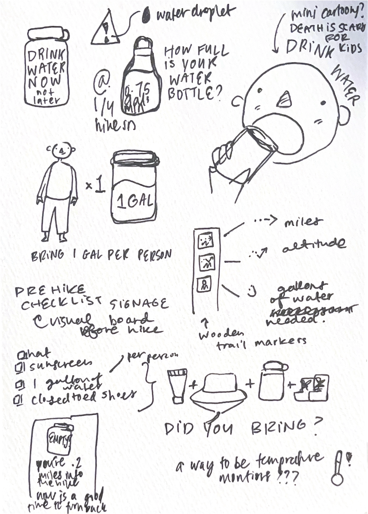
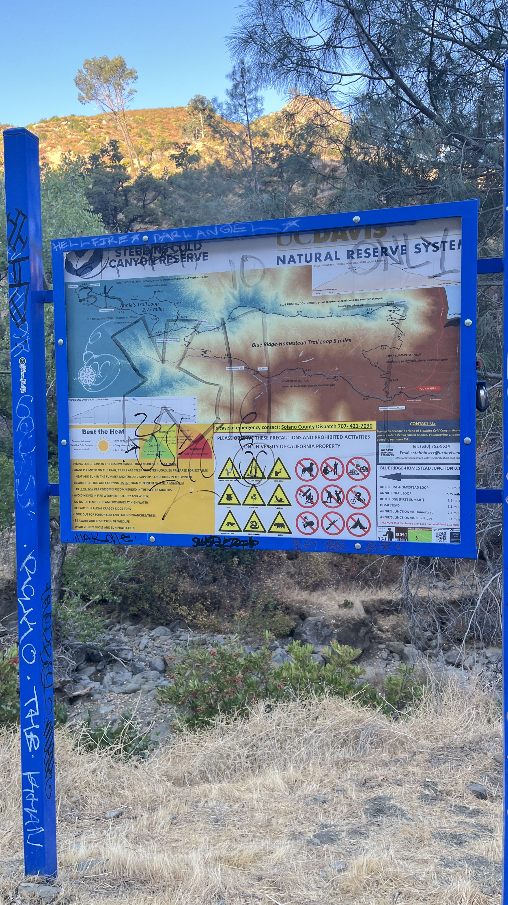
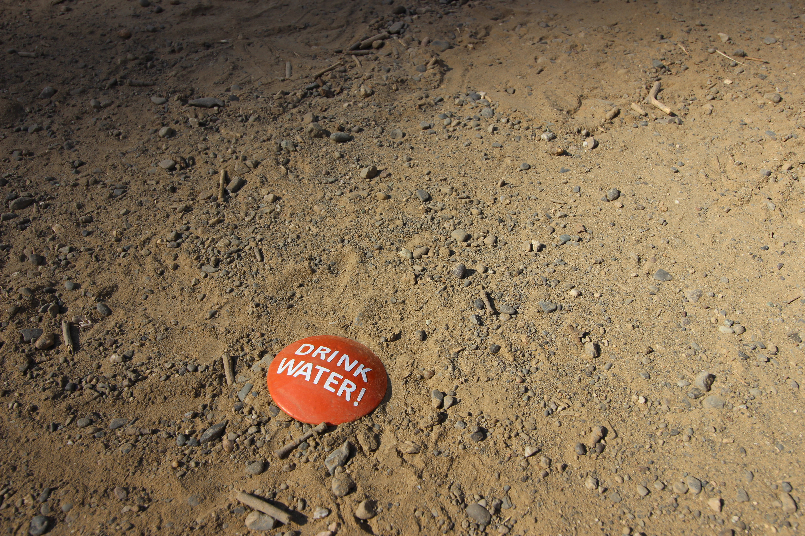
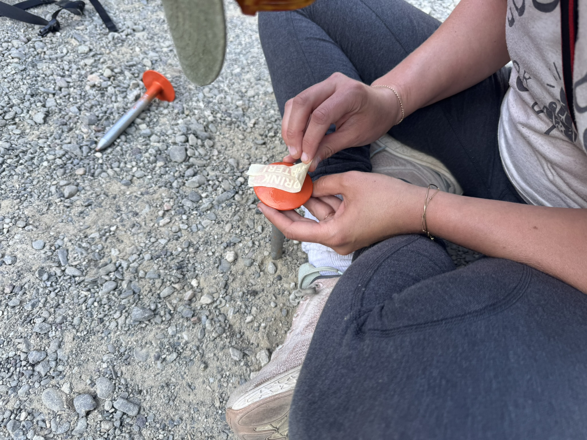
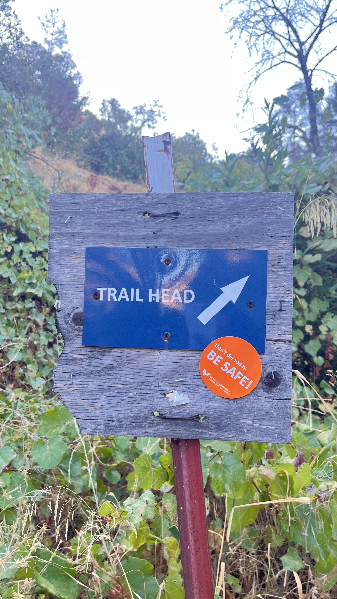
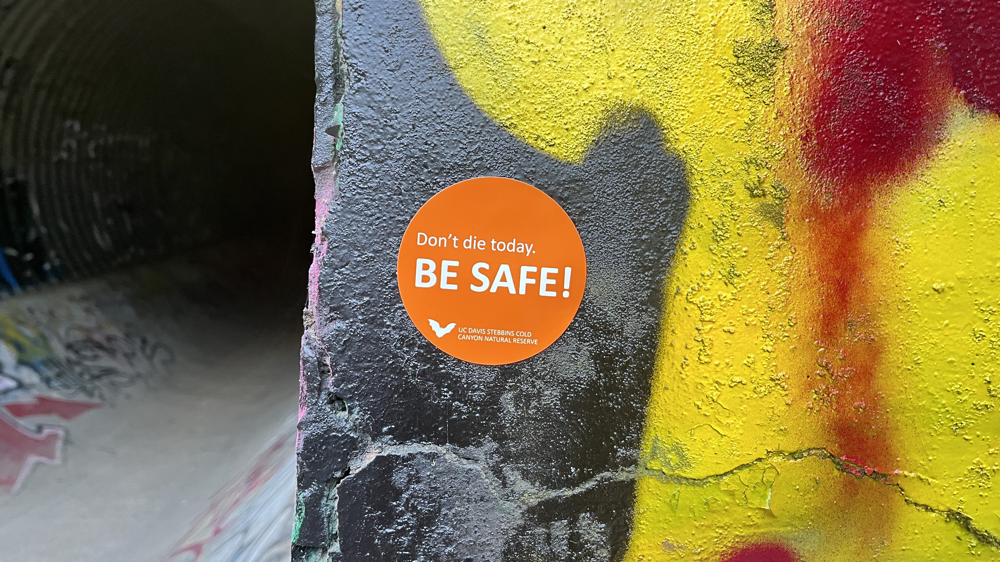
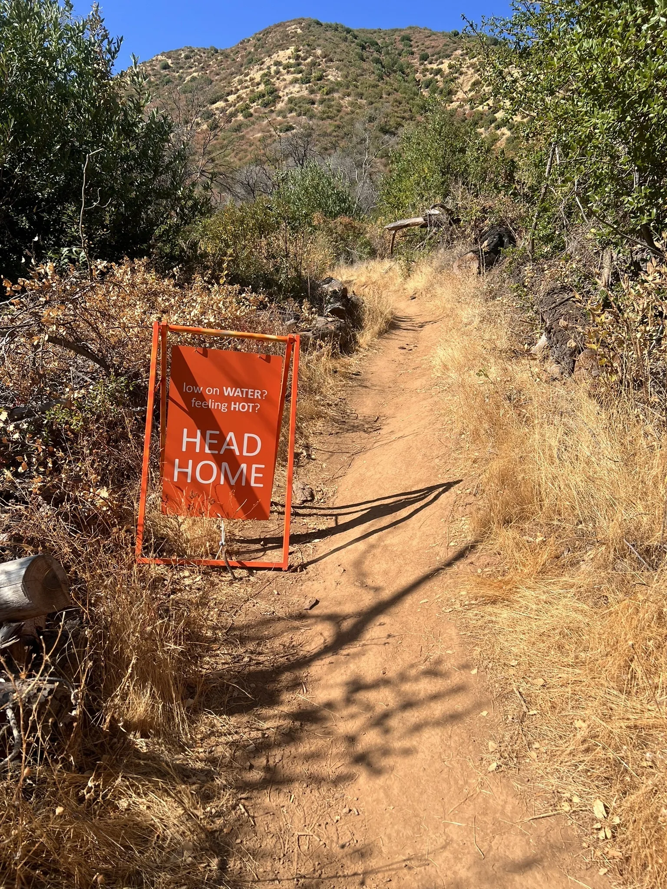
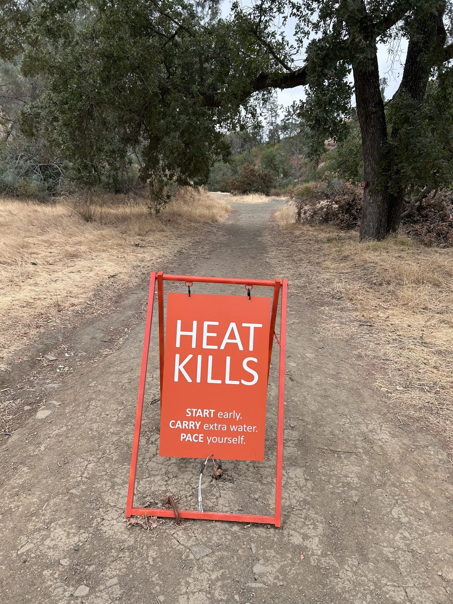

stebbins cold canyon
heat awareness campaign
overview
Stebbins Cold Canyon is a popular hiking reserve near Lake Berryessa, managed jointly by the BLM and the UC Davis Natural Reserve System. It gets a lot of visitors, many of whom arrive underprepared. In summer 2025 alone, the reserve had 6 emergency helicopter rescues due to heat exhaustion and dehydration. The trails are steep, shade is limited, and it can hit over 100°F by midday.
This was a collaboration with Professor Emily Schlickman (LAED) and the UC Davis Natural Reserve System. I contributed to the design process, built prototypes, helped with installation on the trail, and did the background research. Paul Havemann, the reserve director, helped coordinate access and assisted on install days. The campaign includes sandwich board signs at decision points, orange ground stakes, and stickers.
the problem
The existing trailhead signage at Stebbins is dense, graffitied, and visually overwhelming. There is a "Beat the Heat" panel buried in a large information board at the entrance, but it competes with trail maps, rules, distances, and QR codes. It does not interrupt. It does not prioritize. A hiker who is already underprepared will not stop to read it.
The deeper issue is a gap between knowing a place and preparing for it. Many visitors arrive through AllTrails, see a "moderate" rating, and do not internalize what 105°F at 1 PM actually means on an exposed ridge. By the time they feel it, they are already in danger.
How do you communicate urgency at the exact moment someone can still turn back?


design approach
The campaign uses neon orange, a color that does not belong in the landscape. It interrupts. Signs are placed at decision points where the trail starts to climb and turning back is still easy. The copy is stripped down to what someone mid-hike will actually read.
Three sandwich board signs carry different messages depending on location. At the trailhead: Heat Kills. Start early. Carry extra water. Pace yourself. Further up at the climb: Low on water? Feeling hot? Head Home. The largest text is the action. The smaller copy is the condition. The goal was a sign that works in one second.
Ground stakes with stamped orange discs reading "DRINK WATER!" are placed along the path at lower intervals, a smaller reminder that keeps the same orange visual language.


additional touchpoints
Beyond the trail itself, orange "Don't die today. BE SAFE!" stickers extend the campaign to surfaces visitors encounter before and after their hike: the trailhead post and the underpass tunnel on the approach path. Stickers are cheap, easy to replace, and can go places the sandwich boards can't.


installed
The signs were installed on the trail in summer 2025. I helped with the on-site installation and placing the ground stakes. The orange metal A-frames are stable in wind and visible from a distance.


the data behind it
As part of the collaboration, I compiled incident data from public social media posts going back to 2017 and cross-referenced each event with historical weather data from the Open-Meteo archive. 51 rescue events in total. Most happen June through September, between 11am and 4pm, on days that hit 90°F or above.
It made the case for why the signs needed to be blunt. It also gave the reserve a record of incidents they did not have in one place before. And it helped determine where the signs should go.
Most visitors arrive unprepared. No water, wrong footwear, no sense of how quickly the heat compounds past noon on exposed sections of trail.
The existing signage was not working. The heat warning at the trailhead is buried in a large information board competing with trail maps, distances, and QR codes. It does not interrupt. It does not stop anyone.
The design response had to match the conditions. Signs that work in one second, at the moment someone is already on the trail and can still turn back.
reflection
Working on this made me appreciate how much the physical context shapes whether something communicates. The signs exist in a specific place, at a specific time of year, competing with heat and exhaustion for someone's attention. That's a different constraint than screen design.
It was also useful to see firsthand why the existing signage wasn't working. Being on the trail and watching where people slowed down, where they looked, where they tuned things out — that informed where we put things.
The data side was my own research contribution to the project. The rescue log ended up being useful to the reserve too, since that information wasn't consolidated anywhere before.